Edit a rounded or chamfered corner on a sheet metal part
Edit a rounded or chamfered corner on a sheet metal part in the ordered environment
-
Select the corner you want to edit.
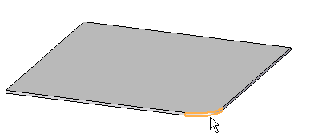
-
Click the Edit definition button.
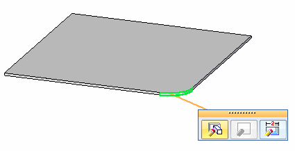
-
Click the handle.
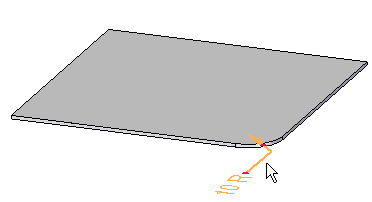
-
Type a new value for the round or chamfer and click Enter.
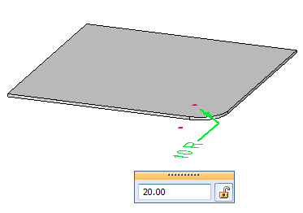
-
On the Edit Definition command bar, click Finish
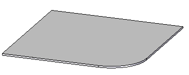
Edit a rounded or chamfered corner on a sheet metal part in the synchronous environment
-
Select the corner that you want to edit.
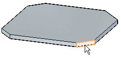
-
Click the handle.
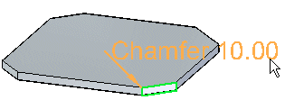
-
Type a new value for the round or chamfer.
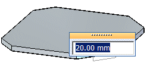
-
Click to display the new round or chamfer.
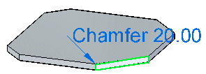
-
Click to finish the edit.
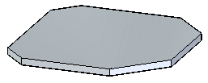
-
You can select the break corner set in PathFinder to select all corners within the set.
If all breaks in the set have the same radius or chamfer value, only one handle is displayed.
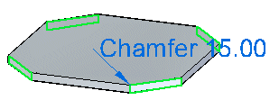
If the set contains breaks with different radius or chamfer values, a handle is displayed for each unique value.
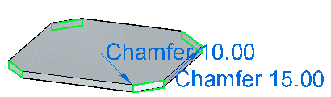
How do I
Break a corner on a sheet metal partLook up more details
Break Corner commandBreak Corner command bar
Break Corner command bar